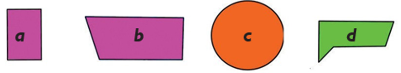
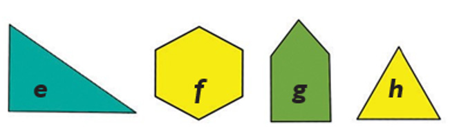

- 3.Draw a rectangle by tracing a matchbox.
- 4.Draw an oval by tracing the shape of an oval object.
- 5.Draw a square by tracing the shape of a square object.
- 6.Draw a parallelogram by tracing the shape of a parallelogram object.
- 7.Draw a trapezium by tracing the shape of trapezium object.
Exercise 4
Study the following figures and then answer the
questions that follow.


Questions
- 1.Write the letters of all four sided shapes.
- 2.Write the letter appearing in the shape of a circle.
- 3.Write the letters of all the shapes of triangles.
133
133 Exercise 3 continues. 3. Draw a rectangle by tracing a matchbox. 4. Draw an oval by tracing the shape of an oval object. 5. Draw a square by tracing the shape of a square object. 6. Draw a parallelogram by tracing the shape of a parallelogram object. 7. Draw a trapezium by tracing the shape of a trapezium object. 4. Draw an oval by tracing the shape of an oval object.5. Draw a square by tracing the shape of a square object.6. Draw a parallelogram by tracing the shape of a parallelogram object.7. Draw a trapezium by tracing the shape of trapezium object. Exercise 4. Study the following figures and then answer the questions that follow. The labelled figures are: a, a rectangle; b, a trapezium; c, a circle; d, an irregular five-sided shape; e, a triangle; f, a hexagon; g, a five-sided house shape; h, a triangle; and i, a parallelogram. Questions. 1. Write the letters of all four-sided shapes. 2. Write the letter appearing in the shape of a circle. 3. Write the letters of all the shapes of triangles. Study the following figures and then answer the questions that follow. Questions1. Write the letters of all four sided shapes.2. Write the letter appearing in the shape of a circle.3. Write the letters of all the shapes of triangles. ARITHMETICS PUPIL'S STD 2.indd 13306/11/2024 17:24